全島で比べる
家の尺度と原本地形の変換を維持。同じ27所有ID・成熟を使いますが、新しい水庭診断では8個のセルを移しています。原本は自由な造形で、カメラと切り取りも異なります。画面の pixel 一致や全体の美術到達を示す比較ではありません。

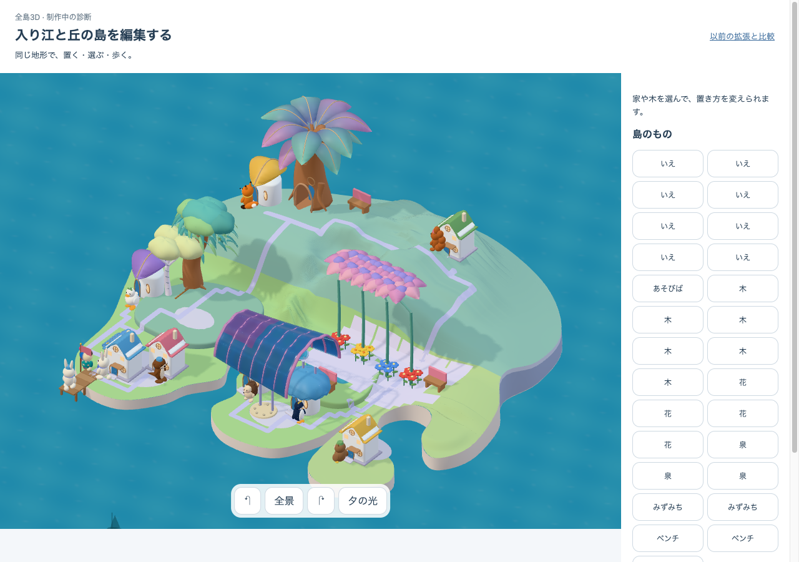
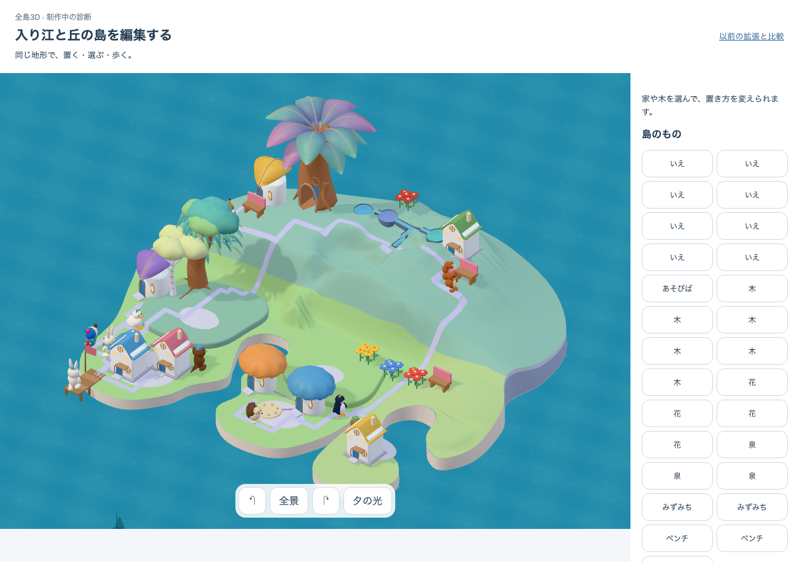
実際の編集操作
desktop のマウス操作です。phone/tablet は幅と reduced motion の表示確認。実機 touch、自然取得、数日かけた成長、本人保存・学習・SW更新、無説明理解の代わりにはしません。水の地形が変わる予告中は未来の地形を表示し、住人を非表示・停止。既存の道と所有物は確定側の表示を保ち、全未来シーンの再現ではありません。
authored-water-v1:c8e6505d85a8c885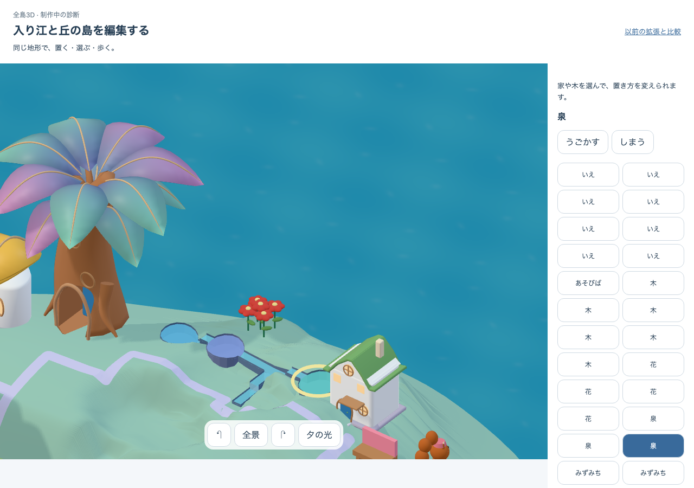
authored-water-v1:c8e6505d85a8c885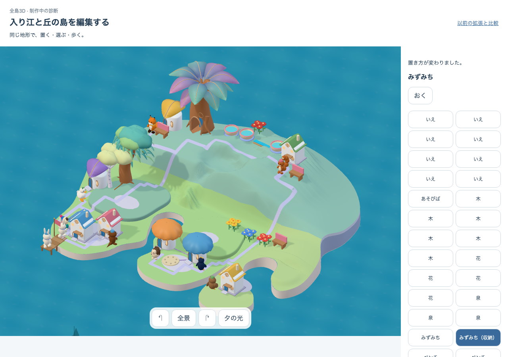
authored-water-v1:53e25e6d724deba3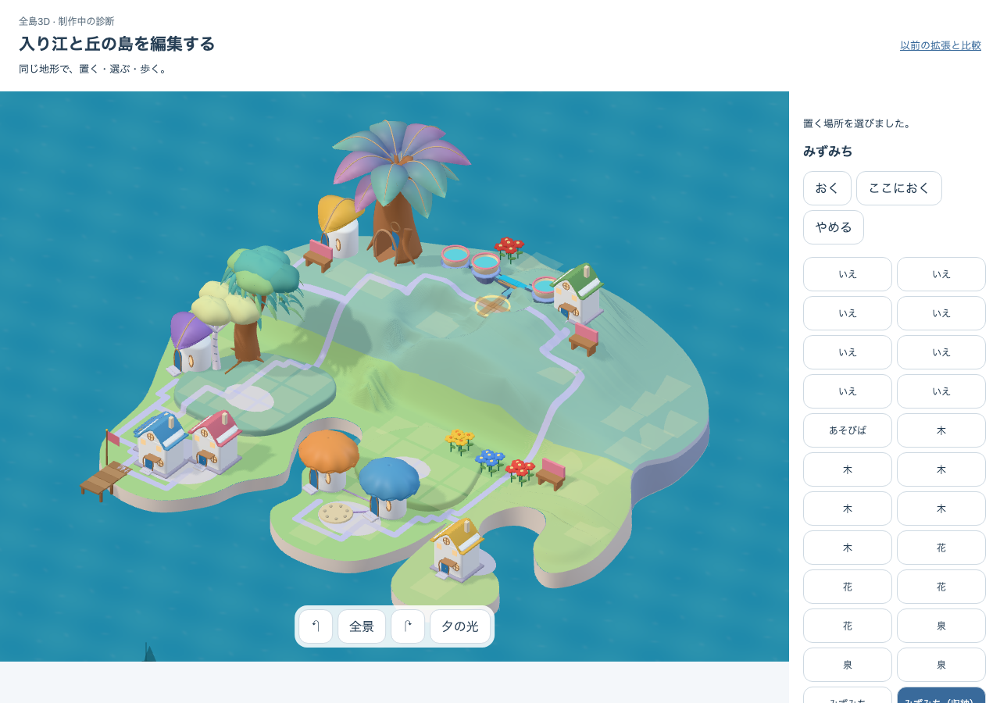
authored-water-v1:c8e6505d85a8c885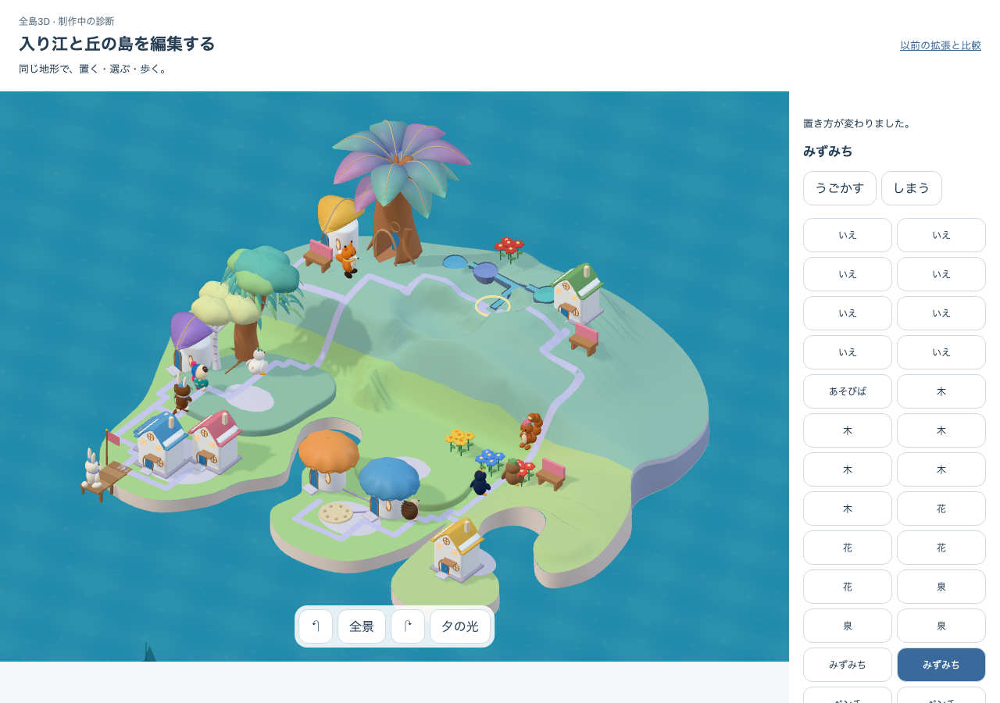
authored-water-v1:c8e6505d85a8c885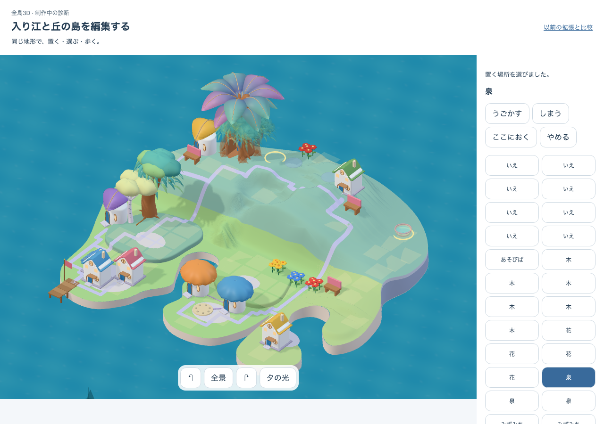
authored-water-v1:dca4678b2bea58c9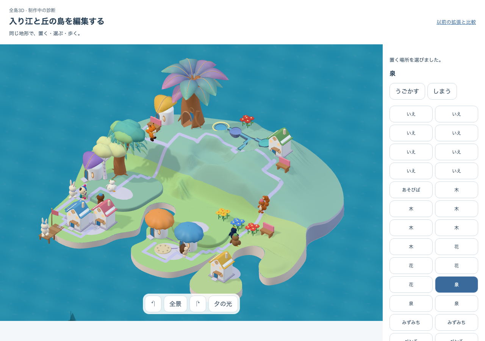
authored-water-v1:c8e6505d85a8c885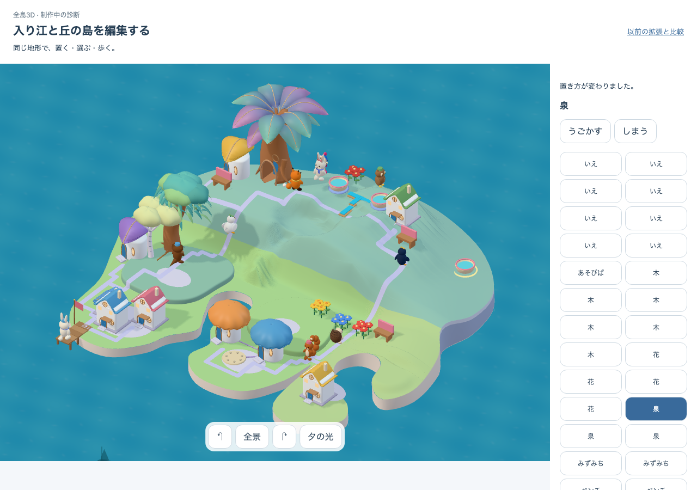
authored-water-v1:dca4678b2bea58c9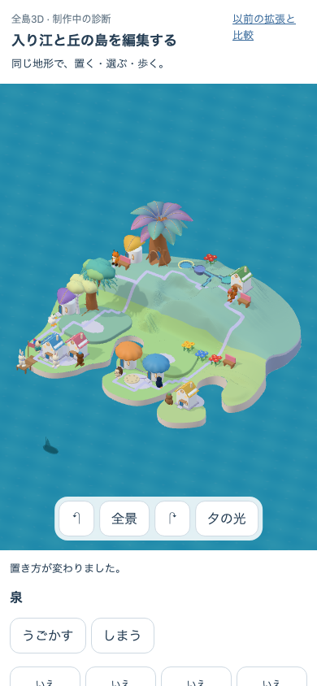
authored-water-v1:c8e6505d85a8c885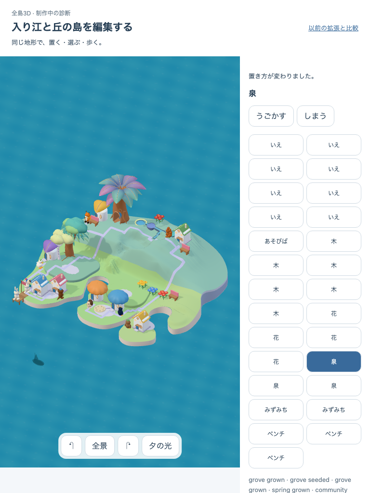
authored-water-v1:c8e6505d85a8c885実際に描いた版・世界・候補
{
"url": "http://127.0.0.1:5343/prototypes/place-qa/authored.html?water=wide",
"build": "authored-water-m1-a3",
"delivery": "DEV explicit water=wide; synthetic state; no player DB write",
"sourceFixed": true,
"normalProductionNativeArtDefault": false,
"artCandidate": "native05-authored-water-m1-v1",
"landscapeProjection": "authored-floor-v1",
"nativeGrowingArt": "true",
"worldDefinition": "native05-authored-world-m0-v2",
"worldRevision": "authored-water-v1:c8e6505d85a8c885",
"nativeKitSha256": "7a02fb27a0dfad8d1cb4b2700074b9de42dddb052611354176bddf4bf69f6a34",
"nativeSourceSha256": "8398eda9ac084a6e80ed22f1a82670c380b017544a177106325aaa7ba7f8f68d"
}